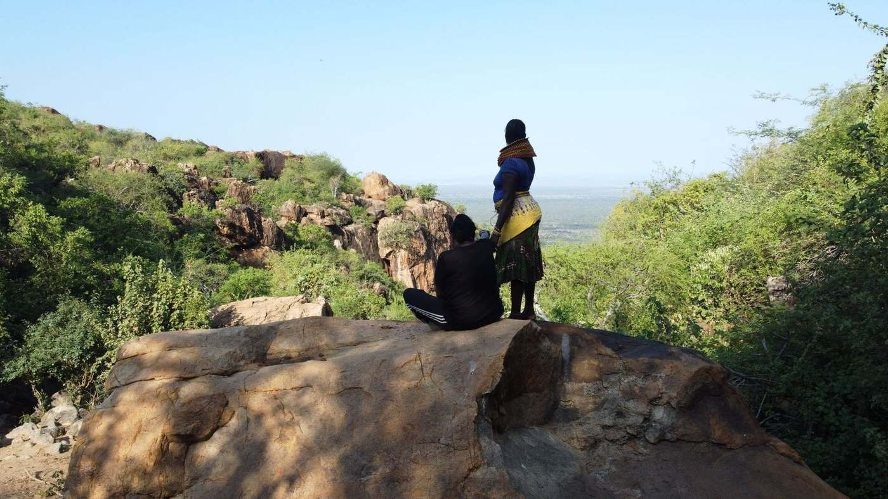
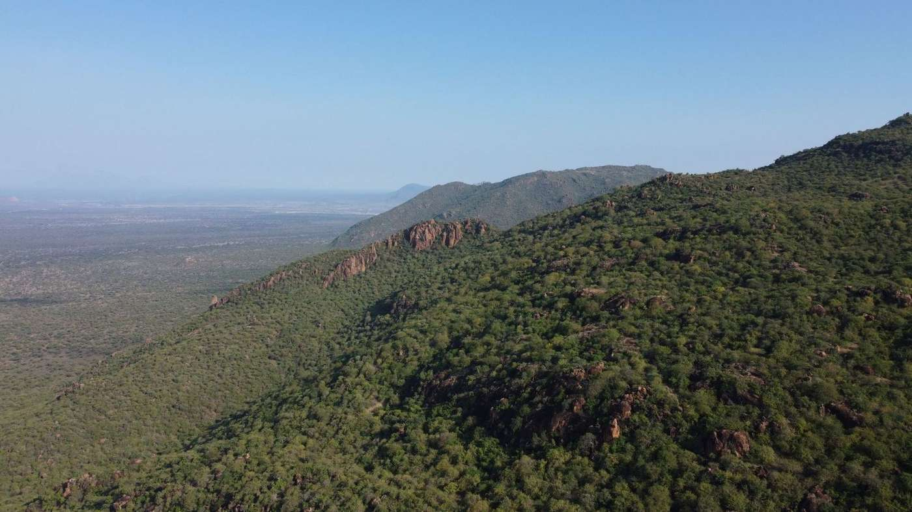
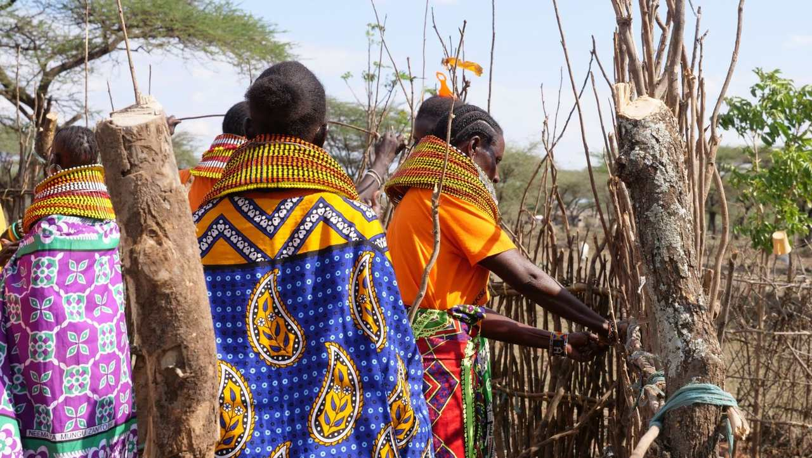

Demo page
Eight ideas to try.
Six are now on the real site. Two are waiting: Josephine’s voice needs her recording and her OK, and the photo story needs Cliffe’s six photos and his own lines.
Moving hero
The top of the home page moves, slowly, like wind across the land. It sets a calm mood before anyone reads a word.
Now on the real site: the top of the home page, with a Pause button. It uses Cliffe's five photos until he sends a clip.

Educate · Protect · Empower
Every child deserves
a future.
Josephine’s voice
A play button beside her photo. Thirty seconds of the founder saying, in her own voice, why she started this.
To make it real: a 30-second recording from Josephine, and her OK to publish it. There is no recording yet, so this demo plays no sound.

In her own voice
Josephine Ekiru, founder
Demo of the player only. It makes no sound.
First-term counter
Large numbers that count up when you reach them: students in class, fees paid, receipts on file.
Now on the real site: the Impact page. It shows empty slots, not numbers, until the real first-term totals exist. The numbers below are samples and are only on this demo page.
Photo story
One page, six of Cliffe’s photos, one line each. Each picture opens up as you scroll to it.
To make it real: Cliffe’s choice of six photos and his own line for each. These captions are placeholders that only describe the picture.





Photos: Cliffe Wasike
Sharper type
The same words, set with more care: bigger contrast between heading and text, tighter letters, shorter lines, more air.
Now on the real site: every page.
Who we are
A community organisation in Isiolo, working for children’s education and safety.
Working across Isiolo County’s diverse communities, we remove the barriers that keep children out of school: fees, poverty, distance, and risks to their safety.
Educate
School fees, uniforms, books and learning materials, paid straight to schools.
Protect
With child protection authorities and approved care providers, we help children at risk stay safe and in school.
Empower
Mentors, career guidance, digital literacy and life skills, with graduates coming back to guide the next group.
- Heading about a third larger, letters pulled closer, lines tighter
- Intro text limited to about 50 characters a line, so the eye doesn’t travel far
- More space above and below each block
- Small labels spaced wider, so they read as labels
Hand-drawn marks
A brush line under one key phrase, or a loop round one word, drawn in as the heading appears. One per page, no more.
Now on the real site: the main heading of every page, one mark each.
Every child deserves a future.
Every shilling, traced from donor to classroom.
Help a child reach school, and stay there.
Map fly-in
The map starts on the whole of Kenya, then glides down to Isiolo County. It answers “where is that?” in three seconds.
Now on the real site: the map on the About page, with a replay link.
Isiolo time
Page headers follow the real clock in Isiolo: the daytime landscape by day, the dusk one in the evening, with the local time shown.
Now on the real site: every page header and the home page. See the evening header or the daytime one.